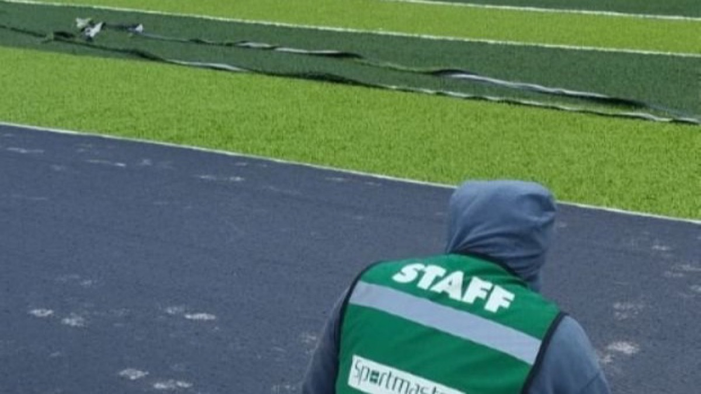
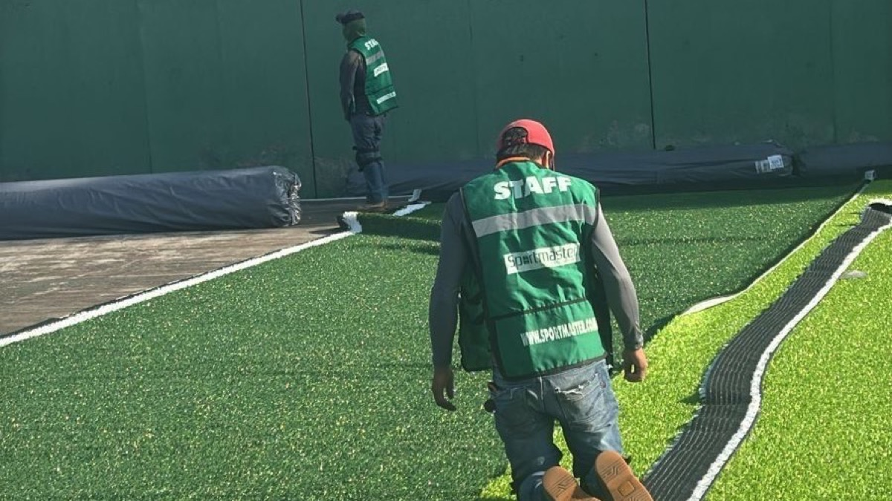

Apariencia profesional
Buena recuperación de fibra y presentación premium para futbol 7, soccer, clubes y canchas con alta exigencia visual.
Suministramos e instalamos pasto sintético deportivo para canchas de futbol 5, futbol 7, futbol rápido, soccer, escuelas, clubes, municipios y complejos deportivos en México.

Quien busca pasto sintético deportivo muchas veces empieza buscando material, pero el proyecto convierte mejor cuando entiende qué sistema necesita instalado.
Buena recuperación de fibra y presentación premium para futbol 7, soccer, clubes y canchas con alta exigencia visual.
Opción durable para futbol 5, futbol rápido, escuelas y canchas con alto tráfico semanal.
Combina apariencia y resistencia para colegios, municipios y complejos deportivos.
Puede incluir líneas deportivas, arena sílica, caucho sintético, adhesivos, uniones y cepillado final.
Elegimos altura, tipo de fibra y rellenos según deporte, uso, calzado y presupuesto.
9 años contra decoloración por rayos UV del pasto sintético y 2 años en instalación según alcance contratado.
Para vender una cancha o justificar una inversión, las imágenes importan: textura, color, líneas, escala y sensación de cancha lista para jugar.


No se trata solo de comprar rollos. La elección depende del deporte, intensidad de uso, apariencia deseada y sistema de instalación.
Puedes cotizar solo material o material con instalación profesional para entregar la cancha lista para jugar.
El objetivo es recomendar el material correcto sin inflar ni recortar lo importante.
Nos compartes medidas, ubicación y tipo de deporte.
Definimos fibra, altura y rellenos según uso.
Te enviamos alcance claro por WhatsApp.
Suministramos, instalamos y entregamos lista para jugar.
El pasto sintético deportivo puede contar con 9 años de garantía contra decoloración por rayos UV del pasto sintético, más garantía de instalación según alcance contratado.
Fotos para que el comprador visualice cómo puede quedar su cancha antes de pedir cotización.



Envíanos medidas, ciudad, deporte y si buscas solo material o instalación completa. Te respondemos por WhatsApp con una recomendación clara.
Es un sistema de césped sintético diseñado para uso en canchas, con fibra, altura, rellenos y trazo adecuados al deporte.
Depende del uso. Para futbol 7 suele evaluarse monofilamento o híbrido; para futbol rápido y uso constante puede convenir fibrilado o híbrido.
Sí. Podemos cotizar suministro de material o venta e instalación de pasto sintético deportivo según el proyecto.
Puede incluir pasto, líneas, rellenos, adhesivos, uniones, trazo deportivo, cepillado final y garantía según alcance contratado.
Depende del tipo de pasto, uso y mantenimiento. El pasto puede contar con garantía de 9 años contra decoloración por rayos UV del pasto sintético.
Sí. Sportmaster suministra e instala pasto sintético deportivo para canchas en México.
Medidas, ciudad, tipo de cancha, uso esperado, fotos del área y si buscas material o instalación completa.
El monofilamento prioriza apariencia y recuperación; el fibrilado prioriza resistencia en alto tráfico. El híbrido busca equilibrio.